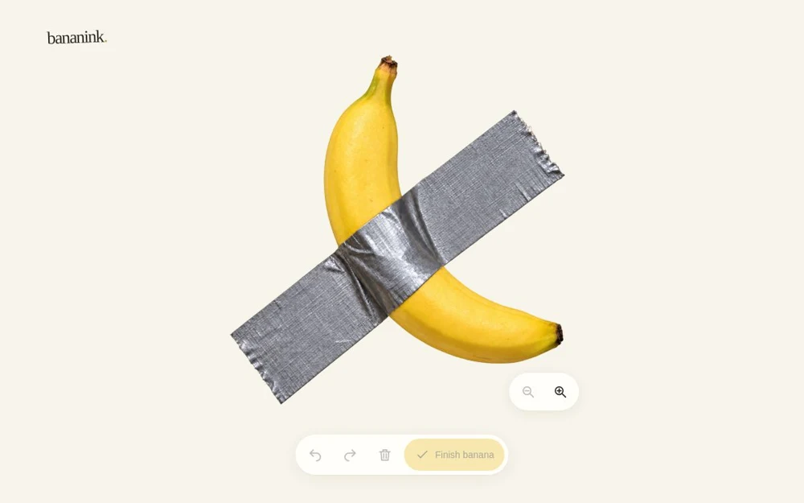
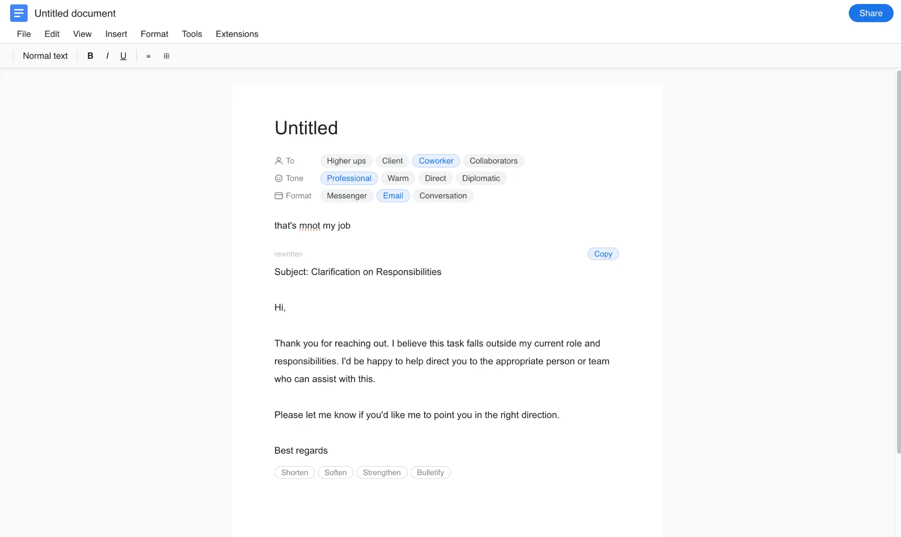
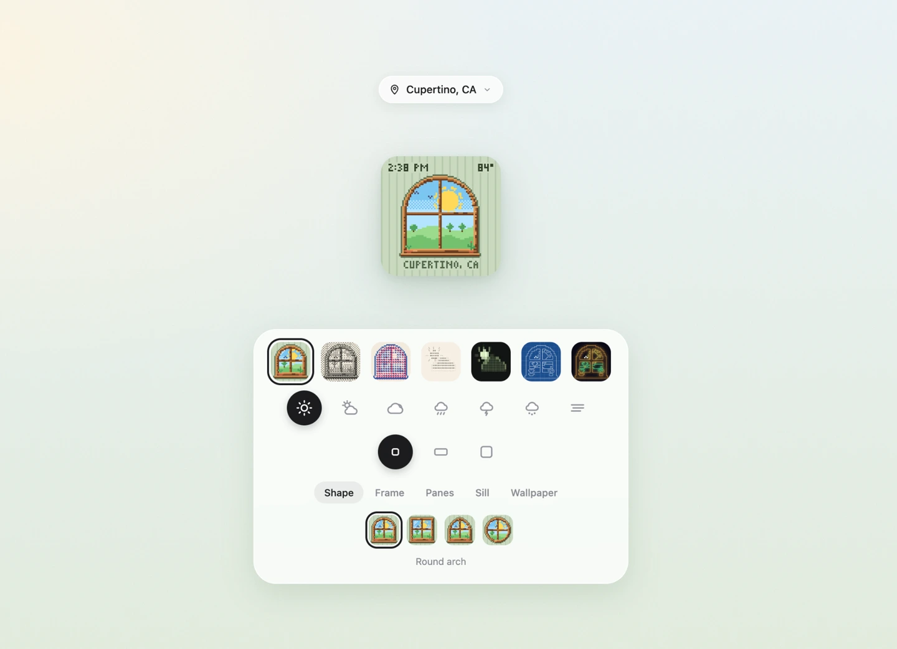
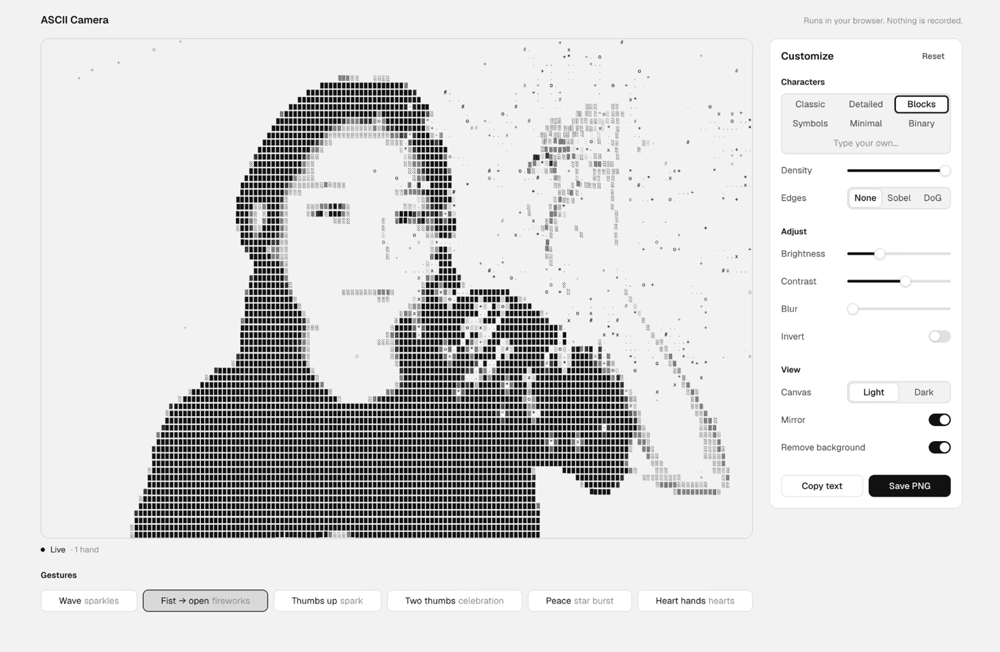
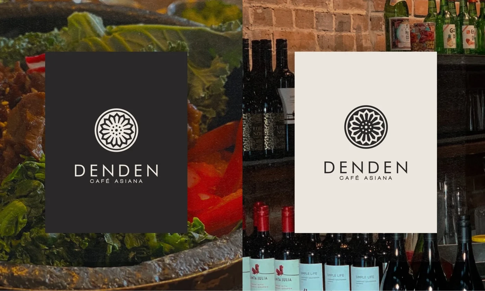
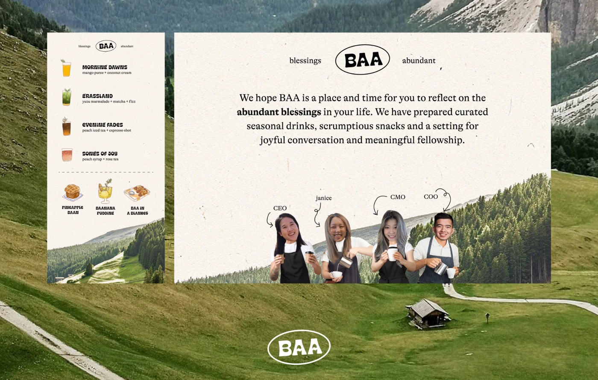

I design systematic consumer experiences. I turn messy signals from people and data into ideas, then find the thread between what people need, what the numbers are saying, and what we can actually build next.
- CURRENTLY
- Sr. Product Designer building loyalty experience @ American Airlines
SELECTED WORK

01 / UNDER ARMOUR
Defining through
ambiguity.Establishing the design system foundation.

02 / TESLA
Built to
scale.Making the design system more scalable across product platforms.

03 / EMBER
Designed for
intention.Designing a dating app with friction for intentional connection.

04 / MX
Making money
personal.Personalizing money management for financial empowerment.

05 / PEOPLEONE HEALTH
Building healthier
habits.Driving activation and habit formation in a value-based healthcare product.
-

Bananink
-

Translate
-

IOS window widget
-

ASCII Mirror
-

NEXT 30
-

Den Den Cafe Asiana
-

BAA

CURIOSITY
BUILDS
BETTER
THINGS.
Janice Khang.
Product designer
in Dallas, Texas.
PLACES
IDEAS
IN BETWEEN.
Thoughtful things.
For real life.
I turn complex problems into digital experiences that feel clear, useful, and considered. The smallest interaction deserves as much care as the bigger picture.
LOOKING.

A little room
to wander.
Motion, small experiments, and things made by hand. I like finding the unexpected in something ordinary.
UNFOLDING.
Always a work in progress.